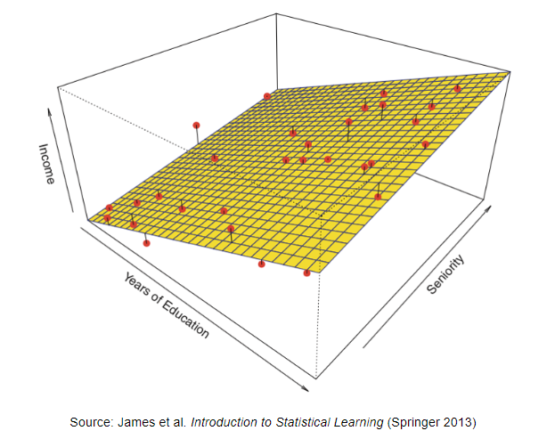
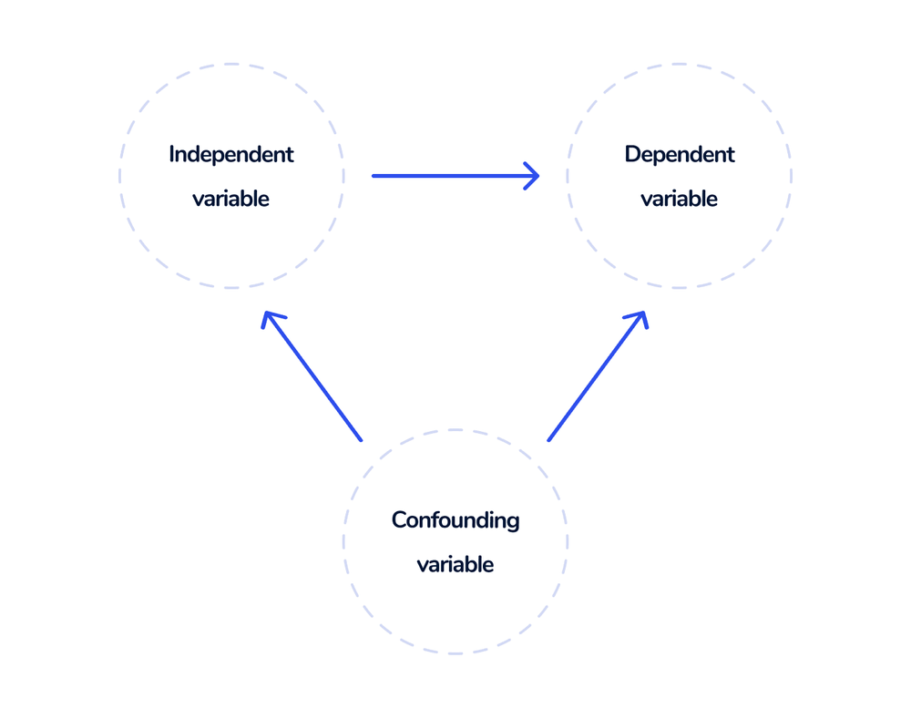

library(fixest)
Lesson Overview
In the last lesson, we focused on the simple linear regression model. Now, we will expand the number of explanatory variables to get the multiple linear regression model, and we will discuss the advantages of this method over simple linear regression.
This lesson covers the following topics:
- The basics of multiple linear regression, and how to interpret coefficients.
- The motivation behind multiple linear regression - omitted variable bias.
- How to conduct statistical inference with multiple linear regression.
- Prediction with multiple linear regression.
1.5.1: The Multiple Linear Regression Model
Multiple linear regression is an extension of simple linear regression, which allows us to include more than one explanatory variable.
- We will discuss why we would want to include extra explanatory variables later in section 1.5.3. For now, let us first introduce the basics of the model.
The response variable (outcome variable) is notated y, just like in single linear regression.
The explanatory variables are x_1, x_2, ..., x_k. We sometimes also denote all explanatory variables as the vector \overrightarrow{x}.
- k represents the total number of explanatory variables.
- Note: if you see the notation x_j, that means any explanatory variable x_1, \dots , x_k. The variable x_j represents any individual coefficient (for generalisation purposes).
The multiple linear regression takes the following form:
Definition: Multiple Linear Regression Model
Take a set of observed data with n number of pairs of (\overrightarrow{x}_i, y_i) observations. The linear model takes the following form:
y_i = \beta_0 + \beta_1x_{1i} + \dots + \beta_k x_{ki} + u_i
- Where the coefficients (that need to be estimated) are vector\overrightarrow{\beta} = \beta_0, \beta_1, ..., \beta_k. That means we have k number of variables and k+1 number of coefficients (with the one not attached to a variable being the intercept).
- Where u_i is the error term function - that determines the error for each unit i. Error u_i has a variance of \sigma^2, and expectation E(u_i) = 0.
Same as in Simple Linear Regression, once we have estimated \overrightarrow\beta, we will have a best-fit plane, also called a fitted-values model (see 1.4.2). The fitted values model takes the form:
\hat y_i = \hat\beta_0 + \hat\beta_1 x_{1i} + \dots + \hat\beta_k x_{ki}
- Where \hat y are the predicted values of y based on our best-fit plane.
- Where \hat\beta_0, \dots, \hat\beta_k are our estimates for coefficients \beta_0, \dots, \beta_k.
- Just like in simple linear regression, the error term u_i dispersal because E(u_i) = 0.
Note how I have been saying best-fit plane, not best-fit line. This is because with multiple explanatory variables, we are now no longer in a 2-dimensional space, but a k-dimensional space (based on the number of variables).
- Essentially, each variable has its own axis/dimension.
- Mathematically, we are now in a \mathbb{R}^k space.
Thus, our best-fit line now is a best-fit plane. For example, take this model with 2 explanatory variables x_1 (years of education), x_2 (seniority), and y (income):

Any point on this plane is a part of our best-fit plane.
1.5.2: Interpretation of Coefficients
We now have a fitted-values model. But what do these actually mean in the context of the relationship between x and y? We will see that the coefficients mean slightly different things than in simple linear regression.
- Note: \hat\beta_j refers to any coefficient \hat\beta_1, \dots, \hat\beta_k (for generalisation purposes).
Warning!
Note that the following interpretations only applies to continuous x variables and continuous/ordinal y variables. We will discuss interpretation with other variables in lesson 1.6.
Interpretation of \hat\beta_j
In simple linear regression, we discussed how \hat\beta_1 is the change in y given a one unit increase in x (see 1.4.3).
However, with multiple linear regression, things change a little. \hat\beta_j is now the relationship between x_j and y, holding all other explanatory variables x_1, \dots, x_k not x_j constant.
We can prove this with a partial derivative (see appendix A.3 for mathematical guidance). We know that the rate of change between x_j and y should be the partial derivative of y in respect to x_j. Thus, let us find the partial derivative (for simplicity, we will use x_1, but this applies to any x_j):
\begin{split} & \hat y = \hat\beta_0 + \hat\beta_1x_{1i} + \hat\beta_2x_{2i} + \dots + \hat\beta_kx_{ki} \\ & \frac{\partial \hat y}{\partial x_1} = 0 + \hat\beta_1 + 0 + \dots + 0 \\ & \frac{\partial \hat y}{\partial x_1} = \hat\beta_1 \end{split}
We know that by definition, partial derivatives treat other variables as constants. Thus, \hat\beta_j is the rate of change between x_j and y, holding all other explanatory variables constant.
Interpretation of \hat\beta_1
When x_j increases by one unit, there is an expected \hat{\beta}_1 unit change in y, holding all other explanatory variables constant.
Warning!
Note how I have been using the word relationship, not causal effect.
Causality is not established through estimators, it is established through a strong experimental design (which we will cover in part II of the course).
Note: the “accuracy” of the estimate of \hat\beta_1 can vary based on if a number of assumptions are met. We will discuss this more advanced topic in lesson 2.3.
We know that we are holding all other explanatory variables constant. But what does that even mean?
For example, take this regression:
\widehat{income}_i = \hat\beta_0 + \hat\beta_1 \text{education}_i + \hat\beta_2 \text{age}_i
In this regression, \hat\beta_1 is the effect of education on income, holding all other explanatory variables (age) constant.
- In other words, it means, when holding age constant - at the same age levels, \hat\beta_1 is the relationship between education and income.
- So only looking at 30 year olds, what is the relationship between income and education? What about for 40 year olds?
- The regression estimates this for every level of the other explanatory variables (age), and then averages out the effect of education on income to produce \hat\beta_1.
There is another way to interpret \hat\beta_j without discussing “holding other explanatory variables constant”. We can also say that \hat\beta_j is the effect of x_j on y when partialling out the effect of other explanatory variables.
- This statement is more complex - we will discuss this later in lesson 2.2.
We can also standardise our \hat\beta_j coefficient in terms of standard errors, in the same way we did in 1.4.3.
Interpretation of \hat\beta_0
The intercept term \hat\beta_0 has a very similar interpretation to that of simple linear regression - the expected value of y given all explanatory variables equal 0 (although in the case of simple linear regression, there was only one explanatory variable).
We can prove this mathematically by plugging in \overrightarrow{x_i} = 0 into our fitted values equation:
\begin{split} \hat y_{i, \ \overrightarrow{x_i} = 0} & = \hat\beta_0 + \hat\beta_1 x_{1i} + \dots + \hat\beta_k x_{ki} \\ & = \hat\beta_0 + \hat\beta_1(0) + \dots + \hat\beta_k(0) \\ & = \hat\beta_0 \end{split}
Thus, knowing this, we can interpret \hat\beta_0.
Interpretation of \hat\beta_0
When all explanatory variables equal 0, the expected value of y is \hat{\beta}_0
1.5.3: Omitted Variable Bias and Confounding Variables
We have introduced the multiple linear regression model and how we can add more explanatory variables. But why would we want to add more explanatory variables?
Consider two regressions. The first regression, the “short” regression, is a simple linear regression with only explanatory variable x. The second regression, the “long” regression, contains an extra variable z that is omitted from the first regression:
\begin{split}y_i & = \beta_0^S + \beta_1^Sx_i + u_i^S \quad \text{short} \\y_i & = \beta_0 + \beta_1x_i + \beta_2z_i + u_i \quad \text{long}\end{split}
- Note: the S in \beta_0^S is a subscript representing short. It is not an exponent.
Now consider an auxiliary regression, where the omitted variable z is the outcome variable, and x is the explanatory variable:
z_i = \delta_0 + \delta_1 x_i + v_i
- where \delta_0, \delta_1 are coefficients and v_i is the error term
Now we have z in terms of x, let us plug z into our long regression to “recreate” the short regression:
\begin{split}y_i & = \beta_0 + \beta_1x_i + \beta_2z_i + u_i \\y_i & = \beta_0 + \beta_1 x_i + \beta_2(\delta_0 + \delta_1x_i + v_i) + u_i \\y_i & = \beta_0 + \beta_1 x_i + \beta_2 \delta_0 + \beta_2 \delta_1 x_i + \beta_2v_i + u_i \\y_i & = \beta_0 + \beta_2 \delta_0 + (\beta_1 + \beta_2 \delta_1)x_i + \beta_2v_i + u_i\end{split}
We have “recreated” the short regression with one variable x. Let us see our recreation next to the original short regression:
\begin{split} y_i & = \beta_0^S + \beta_1^Sx_i + u_i^S \\ y_i & = \beta_0 + \beta_2 \delta_0 + (\beta_1 + \beta_2 \delta_1)x_i + \beta_2v_i + u_i \end{split}
- The short regression coefficient \beta_0^S is analogous to the \beta_0 + \beta_2 \delta_0 in the recreation (both are the intercepts)
- The short regression coefficient \beta_1^S x_i is analogous to the (\beta_1 + \beta_2 \delta_1)x_i in the recreation (both are the slope and variable of interest)
- The short regression u_i^S is analogous to the \beta_2 v_i + u_i in the recreation (both are the error terms).
Since the short regression \beta_1^S x_i is analogous to the (\beta_1 + \beta_2 \delta_1)x_i in the recreation, that means coefficient \beta_1^S = \beta_1 + \beta_2 \delta_1.
Thus, the difference between the short regression (simple linear regression) coefficient \beta_1^S, and the original long regression coefficient \beta_1, is \beta_2 \delta_1.
- If \beta_2 = 0 (meaning no relationship between omitted x and y), or \delta_1 = 0 (meaning no relationship between omitted x and x), then difference \beta_2 \delta_1 = 0, thus there is no difference.
- But if either of those facts are not true, then \beta_2 \delta_1 ≠ 0, and there is a difference between \beta_1^S and \beta_1.
More intuitively, if the omitted variable z is both correlated with x and y, then the two coefficients are different by \beta_2 \delta_1.
- Any variable z correlated both with x and y is called a confounding variable.
- This \beta_2 \delta_1 amount is called the omitted variable bias.
Even more intuitively, take the figure below. There are three variables: the independent variable x, the dependent variable y, and the confounder z. The arrows represent correlation between the variables.

If the confounding variable z is correlated with independent variable x and dependent variable y, our simple linear regression with only explanatory variable x (and not z) will have a coefficient wrong by \beta_2 \delta_1.
- This is because our simple linear regression (without z) is estimating both the relationship between x \leftrightarrow y (dependent and independent variable), as well as the relationship x \leftrightarrow z \leftrightarrow y (since all three are correlated).
- This x \leftrightarrow z \leftrightarrow y is called the backdoor path. However, this backdoor path is not actually the relationship between x and y, it is actually the relationship between z and y.
- However, our simple linear regression includes the backdoor path in our coefficient. We do not want that, since we are only interested in how x affects y, not the backdoor path through z.
Thus, without including z in our regression, the regression with just y and x will be incorrect by \beta_2 \delta_1.
Thus, to prevent the incorrect estimation of the simple linear regression model, we must add confounding variables z to our regression.
This is where multiple linear regression comes in: Multiple linear regression will allow us to add additional variables to our regressions, thus “controlling” (holding constant) z, and allowing us to get an accurate estimate of the relationship between x and y.
- We will discuss this idea of “controlling” in more detail later in lesson 2.2, as it is more advanced.
1.5.4: Regression Goodness-of-Fit Statistics
We have fit a regression model with our estimates of coefficients. But how good is our regression model? We can use two main summary statistics to figure this out.
Warning!
The content in this section is almost identical to 1.4.6, just slightly adjusted to multiple linear regression. I recommend rereading this section if needed.
Residual Standard Deviation
One way to summarise our fit is by considering our residuals/errors (see 1.4.6).
For each observation i, we have a different residual \hat u_i. We can plot the frequency of each error \hat u_i into a distribution - which indicates how frequently we get different values of error \hat u_i.
- And since \hat u_i is the error/residual, the distribution of \hat u_i tells us the probability of different sizes of errors (probability of being how far away from the true value y_i in the data).
Since \hat u_i is a distribution, we can measure its variance \hat\sigma^2, and its standard deviation \hat\sigma.
\begin{split} & \hat\sigma^2 = Var(u_i) \\ & \sigma = \sqrt{Var(u_i)} \end{split}
This is a little difficult to understand. But consider the figure below - the vertical distributions are the distribution of the residual \hat u_i. They represent how likely we are to get a certain error. Higher variance means this distribution is more spread out, and lower variance means this distribution is less spread out.

Naturally, the better fit our regression is, the smaller the variance of residuals should be.
R-Squared
The R-squared statistic is another statistic commonly used when interpreting the fit of regressions.
Definition: R-Squared
R-Squared measures the proportion of variation in y, that is explained by our regression model with x.
R-squared is always between 0 and 1.
Higher values indicates that our regression model with x explains a large proportion of the variation in y, which is good.
Lower values indicates that our regression model with x explains a small proportion of the variation in y, which is not as good.
However, it is important to not be overly concerned with R-squared, as there are several reasons why it can be a misleading metric.
- The main issue with R^2 is that adding more explanatory variables never reduces the R^2 value.
- Furthermore, R^2 often is high just by random chance - the more variables you have, the more likely you are to “accidentally” explain the variation in y just through randomness.
- That means that if we only focus on R^2, we might end up adding very unnecessary variables that are not confounders, and do not improve our model. There are some downsides to including too many variables, that we will discuss in Part II of the course on econometric theory.
There is also another way to mathematically derive R-squared (which makes more intuitive sense based on its definition). We will do this derivation later in lesson 2.2.
1.5.5: Inference and Hypothesis Testing
Just like in simple linear regression, we will have sampling variation in our estimates of \hat\beta_j. We can quantify this variation/uncertainty with the standard error \widehat{se}(\hat\beta_j).
- Note, every explanatory variable \hat\beta_1, \dots, \hat\beta_k will have its own standard error and sampling distribution.
With the standard error, we can run confidence intervals and hypothesis testing.
Confidence Intervals
Just like previously discussed in 1.4.4, the 95% confidence interval for our estimate of \hat\beta_j has the bounds:
\hat\beta_j - 1.96 \widehat{se}(\hat\beta_j), \ \hat\beta_j + 1.96 \widehat{se}(\hat\beta_j)
Interpretation of Confidence Intervals
The confidence interval means that under repeated sampling and estimating \hat\beta_j, 95% of the confidence intervals we construct will include the true \beta_j value in the population.
Interpretation Warning!
It is very important to note that confidence intervals do not mean a 95% probability that the true \beta_j is within any specific confidence interval we calculated.
We cannot know based on one confidence interval, whether it covers or does not cover the true \beta_j.
The correct interpretation is that over many samples from the same population, we would expect 95% of our confidence intervals to contain the true \beta_j value.
Hypothesis Testing
Hypothesis testing follows the same procedure as simple linear regression in 1.4.5 (also see 1.2.5 and 1.2.6 for more info on hypothesis tests).
In regression, our typical null hypotheses is that there is no relationship between x_j and y, and our alternate hypothesis is that there is a relationship between x_j and y. Thus, our hypotheses are:
\begin{split} & H_0 : \beta_j = 0 \\ & H_1: \beta_j ≠ 0 \end{split}
Now, we calculate a t-test statistic:
t = \frac{\hat\beta_j - 0}{\widehat{se}(\hat\beta_j)}
- Where the 0 represents the null hypothesis value. If you have any other null hypothesis value, change the 0 to your hypothesis value.
Now, we will consult a t-distribution (not a normal distribution) to calculate the p-values.
- We use a t-distribution, not a normal distribution, even if we have met the central limit theorem. The reason we do this is a little complicated, and will be explained later in lesson 2.4.
Once we have obtained our p-values from the t-distribution, we can interpret the p-values as follows:
Interpretation of p-Values for Regression
The p-value is the probability of getting a test statistic equally or more extreme than the one we got with our sample estimate \hat\beta_j, given the null hypothesis is true.
If p<0.05, we believe the probability of the null hypothesis is low enough, such that we reject the null hypothesis (that there is no relationship between x_j and y), and conclude our alternate hypothesis (that there is a relationship between x_j and y).
If p>0.05, we cannot reject the null hypothesis, and cannot reject that there is no relationship between x_j and y.
Warning!
Note how I have been using the word relationship, not causal effect.
Causality is not established through estimators, it is established through a strong experimental design (which we will cover in part II of the course).
1.5.6: Hypothesis Testing with More than One Coefficient
Sometimes, we want to test more than one coefficient at a time in a hypothesis test.
- This will be especially obvious why after lesson 1.6.
For example, let us say we want to test the statistical significance of \hat\beta_2 and \hat\beta_3 at the same time in the following regression model:
\hat y = \hat\beta_0 + \hat\beta_1x_1 + \hat\beta_2x_2 + \hat\beta_3x_3
What we can do is create two models - the alternate model M_a, and the null model M_0. The alternate model M_a is the model we have above, and the null modle M_0 is the model without the two coefficients that we want to test (\hat\beta_2 and \hat\beta_3).
\begin{split} & M_0: y = \beta_0 + \beta_1x_1 \\ & M_a: y = \beta_0 + \beta_1 x_1 + \beta_2 x_2 + \beta_3x_3 \end{split}
Our statistical test will be to test if the alternative model M_a is significantly “better” than our null model M_0. If M_a is indeed significantly better, than we know that the coefficients \hat\beta_2 and \hat\beta_3 together are statistically significant.
Let us generalise this framework.
Definition: F-Test of Nested Models
The F-test of Nested Models allows us to test multiple coefficients at once. It compares two models: M_0 and M_a.
\begin{split} & M_0: y = \beta_0 + \beta_1x_1 + \dots + \beta_g x_g \\ & M_a: y = \beta_0 + \beta_1 x_1 + \dots + \beta_g x_g + \beta_{g+1} x_{g+1} + \dots + \beta_kx_k \end{split}
- The model M_a contains all of the explanatory variables, including the ones we want to test.
- The model M_0 contains the other explanatory variables that are not a part of our test. Model M_0 must be “nested” in model M_a: i.e. all explanatory variables present in M_0 must also be in M_a.
The model tests if M_a is significantly better than M_0. If this is the case, the extra coefficients in M_a that we are testing are statistically significant.
How do we run a F-test of nested models?
Recall the concept of R^2 discussed in 1.5.4. R^2 describes how much of the variation in y our explanatory variables explain.
The F-test uses the R^2 of the two models, and compares them.
- If the M_a model has a statistically significantly higher R^2 value than the M_0 model, then M_a is considered statistically significant, and we can conclude that the additional explanatory variables in M_a are statistically significant.
As we know from hypothesis testing (see 1.2.5 and 1.2.6 for intuition), we need a test statistic and distribution to run a hypothesis test.
The statistic for a F-test is the F-statistic.
- Let us define R^2_a and SSR_a as the R^2 and sum of squared residuals for model M_a.
- Let us define R^2_0 and SSR_0 as the R^2 and sum of squared residuals for model M_0.
- The total number of coefficients in model M_a is k_a, and for model M_0, is k_0.
- Let us define n as the number of observations (should be the same for both models).
Our F-statistic is mathematically calculated as:
F = \frac{(SSR_0 - SSE_a)/(k_a - k_0)}{SSR_a / (n - k_a - 1)}
After calculating our F-statistic, we consult an F-distribution with k_a - k_0 and n-k_a - 1 degrees of freedom.
With this distribution, we can obtain our p-value.
Interpretation of p-Values for F-tests
The p-value is the probability of getting a test statistic equally or more extreme than the one we got with our alternate model M_a, given the null hypothesis is true.
If p<0.05, we believe the probability of the null hypothesis is low enough, such that we reject the null hypothesis (that M_0 is a better model), and conclude our alternate hypothesis (that M_a is a better model). This also means that the extra coefficients in M_a are jointly statistically significant.
If p>0.05, we cannot reject the null hypothesis, and cannot reject that M_0 is the better model. Thus, the extra coefficients in M_a are jointly not statistically significant.
1.5.7: Prediction with Regression
So far, we have focused on how to interpret the relationship between our explanatory and outcome variables. However, we can also use regression for prediction purposes.
- Multiple linear regression is typically much better and accurate at prediction than simple linear regression.
- This is because we are inputting more information for the predictions. Obviously, it is easier to predict something given more data. For example, it is hard to predict someone’s debt level with just their age. But if you have info on their age, credit score, income, occupation, etc., it becomes easier.
Recall our fitted values equation from earlier:
\hat y_i = \hat\beta_0 + \hat\beta_1 x_{1i} + \dots + \hat\beta_k x_{ki}
We input some values of \overrightarrow{x_i}, and we will get a predicted value \hat y_i.
The best way to really illustrate this is with an example. Let us say that our outcome variable y is income, and our explanatory variable x_1 is years of education, and x_2 is age. We will get a regression model like this:
\text{income}_i = \beta_0 + \beta_1 \text{education}_i + \beta_2 \text{age}_i + u_i
Our fitted values equation will take the form of:
\widehat{\text{income}}_i = \hat\beta_0 + \hat\beta_1 \text{education}_i + \hat\beta_2 \text{age}_i
For simplicity, let us say that our estimate calculates \hat\beta_0 = 20000, \hat\beta_1 = 3000, and \hat\beta_2 = 500. Now, our fitted values equation will be:
\widehat{\text{income}}_i = 20000 + 3000 \ \text{education}_i + 500 \ \text{age}_i
Using this fitted value equation, we can plug in any education level and age, and get the predicted income for that education and age level.
For example, what would we predict for a 30 year old with 10 years of education to have as an income? Let us plug in 10 for education into our fitted values:
\begin{split} \widehat{\text{income}}_i & = 20000 + 3000 \ \text{education}_i + 500 \text{age}_i \\ \widehat{\text{income}}_i & = 20000 + 3000 (10) + 500(30) \\ \widehat{\text{income}}_i & = 20000 + 30000 + 15000 \\ \widehat{\text{income}}_i & = 65000 \end{split}
- Thus, someone who is 30 years old with 10 years of education has a predicted income of 65000.
We can do this for any value of education (or any x variable): just plug in \overrightarrow x into the fitted values equation, and you will get a prediction of y.
Remember in the past few sections, how we discussed statistical inference with \hat\beta_j, and how in different samples, the value of \hat\beta_j will change?
Well, what implication does this have on our prediction task? After all, if \hat\beta_j (and \hat\beta_0) change in different samples, our estimates will also change in different samples.
To address this, we can also create confidence intervals for predictions.
The variance of the residuals \hat u_i, Var(\hat u_i), is what we are interested in (discussed in the previous section). The standard deviation of the residuals is just the square root of variance. Let us call this sd(\hat u_i).
Using this concept, we can create 95% confidence intervals for our predictions \hat y_i (just like for estimates of \hat\beta_1).
\hat y_i - 1.96 \ sd(\hat u_i), \ \ \hat y_i + 1.96 \ sd(\hat u_i)
Implementation in R
Regression Estimation
To estimate a regression, we can use the feols() function from the package fixest.
For the feols() function, we will need the fixest package. Make sure to install it if you have not previously (see appendix B.1).
Syntax:
For the feols() function, the syntax is as follows:
model <- feols(y ~ x1 + x2+ x3, data = mydata, se = "hetero")
summary(model)- Replace model with any name you want to store your regression model in.
- Replace y with your outcome variable name, and x1, x2, x3 with your explanatory variables name. You can add more after a + sign, and remove down to one explanatory variable.
- Replace mydata with the name of your dataframe.
The se = “hetero” tells R to use heteroscedasticity-robust standard errors (which we will discuss later in lesson 2.4).
- Just know it is standard to use robust standard errors nowadays.
Note: you can also use the lm() function with the same syntax, excluding the se = “hetero” section. However, this will not include robust standard errors.
Example:
Let us run a regression with outcome variable immatt (attitude towards immigrants), explanatory variable age and educ (education), from the dataframe called dta:
my_model <- feols(immatt ~ age + educ, data = dta)
summary(my_model)OLS estimation, Dep. Var.: immatt
Observations: 33,706
Standard-errors: IID
Estimate Std. Error t value Pr(>|t|)
(Intercept) -0.529355 0.026638 -19.8720 < 2.2e-16 ***
age -0.005175 0.000291 -17.8117 < 2.2e-16 ***
educ 0.063833 0.001381 46.2108 < 2.2e-16 ***
---
Signif. codes: 0 '***' 0.001 '**' 0.01 '*' 0.05 '.' 0.1 ' ' 1
RMSE: 0.932834 Adj. R2: 0.08225We can see our output:
- In the estimate column, we get our intercept estimate \hat\beta_0, and our explanatory variable coefficient estimates \hat\beta_1 and \hat\beta_2.
- In the standard error column, we can see R calculates the standard errors for us.
- In the t-value column, we can see R calculates the t-test statistic for us.
- In the p-value column, we can see R calculates the p-value for us, and puts stars * if the coefficient is statistically significant.
Confidence Intervals
To create confidence intervals for our coefficients, we can use the confint() function.
- Note: you must fit a regression model before doing this, see above.
confint(model)- Replace model with the variable name that you stored your regression model to.
Example:
Let us find the confidence intervals for the regression we fit above:
confint(my_model) 2.5 % 97.5 %
(Intercept) -0.58156640 -0.477142689
age -0.00574481 -0.004605809
educ 0.06112520 0.066540126We can see that R outputs the lower and upper bound of our confidence intervals for our coefficients.
Prediction
For prediction, we can use the predict() function. You must fit a regression model before doing this, and also must have new x values in which you want to predict.
# predict
predictions <- predict(model, newdata = x_values)
predictions- Replace predictions with any variable name in which to store your predictions.
- Replace model with your regression model variable name that you fit earlier.
- Replace x_values with any vector of x-values you want to predict.
The final predictions prints out our predictions.
Example:
Let us use the previous regression example, with outcome variable immatt (attitude towards immigrants), explanatory variable age.
Let us say I want to predict the immigration attitude of a 20 and a 60 year old, both at education years equalling 12. I will first create a vector with these explanatory variable values.
# my values for x1: age
x1_values <- c(20, 60)
# my values for x2: educ
x2_values <- c(12,12)
# bind both variables into dataframe
x_values <- data.frame(cbind(x1_values, x2_values))
#name the columns so R knows what variables they are
colnames(x_values) <- c("age", "educ")Now, let us predict:
my_prediction <- predict(my_model, newdata = x_values)
my_prediction[1] 0.13313121 -0.07388117We can see that our output includes predictions.